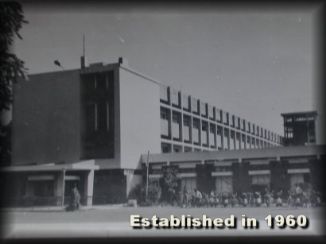

At that time Shri S.R. Beedkar, Principal of S.V. Polytechnic was the planning officer of the institute. Shri J.N.Moudgill joined in 1962 as the first principal of MACT. In 1963, MACT shifted to the new campus partially completed academic building.
The Institute is named after the renowned educationalist and scholar, Maulana Abul Kalam Azad, former Union Education Minister, Government of India. The foundation stone of the Institute building laid by the Prime Minister late Pt. Jawaharlal Nehru on 23rd April 1961.The Institute Progressed into the higher level of an education center in the steady development of infrastructure as well as academics.
1960-1969
In the beginning, five years degree program in Civil, Mechanical and Electrical was started. In 1963, five year program in Architecture (B. Arch) was started. In 1964, Institute is shifted to its own building in the present campus. During the year 1964 to 1965, two hostel 1 and 2 started functioning, and a post office also opened in the same year. In 1966, library and lecture hall G1 to G9 were constructed, and hostel 4 and 5 also started functioning. In the same year, industrial oriented M.Tech program in Thermal and Hydro Electrical started under the UNESCO assistance. In 1967 hostel 6 is completed and in 1968, two M.Tech courses in Engineering Material for Design and Hydro Electrical and Foundation Engineering were started. In 1969, two M.Tech part time program started to cater the industrial needs.
1970–1979
In 1970 to 1971 additional M. Tech part time course was started. Student’s cooperative store started to cater the basic material supply to the students. In 1972, Bachelor degree program in Electronics and Communication engineering was started. In 1976, Dispensary building, III and IV type quarters were constructed. As an academic improvement program, a journal of MACT was started. In collaboration with BHEL, the PORL started to test the hydro machines, which in unique facilities available in the institute. In 1975 12 new Type VIII quarters were completed and Girl’s Hostel of the capacity of 48 was completed.
In 1980 - 1989
In 1980, lecture hall G7, G8 and G9, Workshop and library building was completed. In 1981, a full time M.Tech course on Stress and Vibration was started. In the period of 1982 to 1984 first floor of D block and another Girls Hostel with the additional capacity of 48 and PG classroom, C block and 8 bachelor’s flats were constructed.
In 1985 silver jubilee auditorium renovated. In 1986 to 1987 bachelor degree in Computer science and Engineering and three years MCA program was started.In 1988, The first floor of J block and in 1989 officer’s club was constructed.
In 1990 – 1999
In 1990 two more M. Tech programs were started. Pension scheme implemented for the employee. In 1991, 53 type IX quarters were constructed. Visitors hostel and extension of dispensary were also completed in the same year. In 1992 masters program in urban development was started with six laboratories. In 1993 type III quarters and new garage were completed .In 1994 remaining part of the first floor of B and C block was completed. In 1995 two M.Tech courses namely Maintenance Engineering and MMW were started. 12 VIII quarter were also constructed in the same year. In 1996 M. Tech course in Industrial Designing was started, MP Step building and type IX quarter were also constructed. In 1997 institute received academic autonomy. Same year Energy Center, new guest hostel and 8 no. of Type III duplex quarters were completed. Also M. Tech program in Energy was started. In 1999, second sump well and RCC overhead tank of capacity 750KL were built.
2000 to 2009
In 2001, B. Tech course in IT started. Beautification and widening of road from MANIT square were completed. In 2002 institute received the status of Deemed University, fully funded by MHRD Govt. of India. In the same year, curriculum of B. Tech course was revised, Library is modernized and computerized, and internet facility and institute website was launched .In 2003 word bank assis Technical Education quality Improvement Program (TEQUIP) was started. Institute started a central computer facility. In 2004 first convocation was held and Dr. Natrajan, Chairman AICTE delivered the convocation address at Dr. Radhakrishnan auditorium. Second convocation was held on 24th October 2004, and convocation address was delivered by Governor of MP Dr .Balram Jakhar. In 2005 PG courses in Computer Engineering were started after recruitment of faculty and supporting staff. New department of GIS and remote sensing were started.The third convocation was held on 3rd Nov 2005, and convocation address was delivered by Honorable minister Shri Arjun Singh. In 2006 new M. Tech Program and Masters of Business Administration (MBA) WAS started. In 2007, VLSI Laboratory was established. IV convocation was held on 27th April 2007, and Convocation address was given by Shree Sandeep Banerji chairman BOG. Institute started six new undergraduate programs started. In 2008 and 2009 5th and 6th convocation were held.
2010 to till date
Students was increased from 12 to 18. Presently 29 M. Tech courses are running. Ordinance of UG, PG and PhD were established.
In 2012 new girls hostel of the capacity of 600 was built and presently about 900 girls students are staying in the hostel. Boys hostel with the capacity of 1000 was completed in 2013 and during that time sports complex and vehicle shed were completed. In 2014 and 2015 four department blocks and new teaching block completed.
In 2014 Institute made an artificial lake “Lotus Lake” and Boat club. In the same year department of Biological Science and Engineering and three centre of excellence namely
1. Energy Centre
2. Remote,
3. GIS and GPS and Nano Science and Engineering.
HOME
>Registration / Examination
>About Us
>Mission Vision and Goals